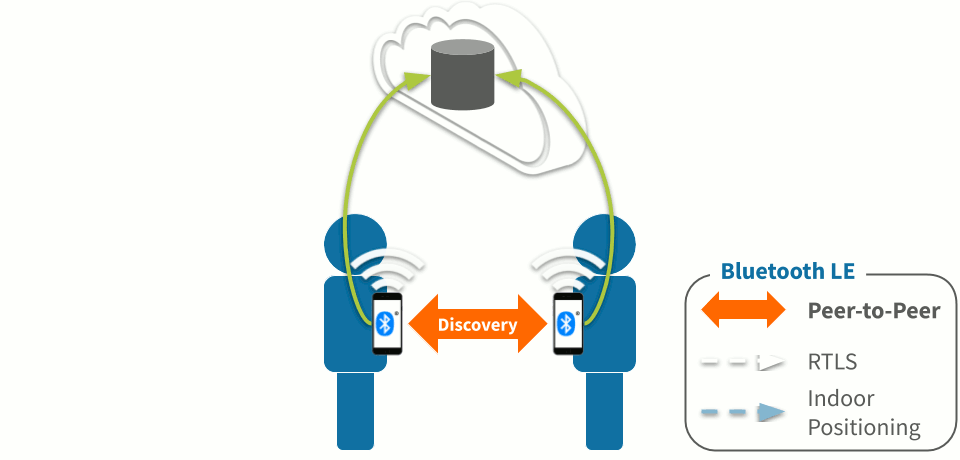
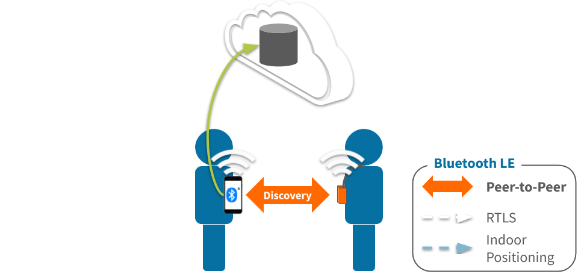
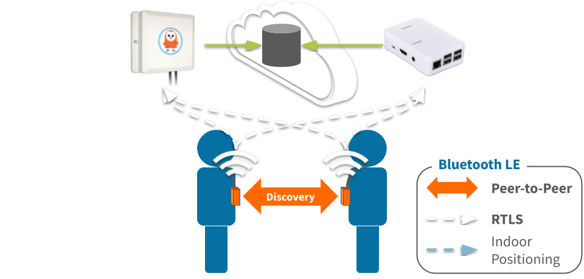
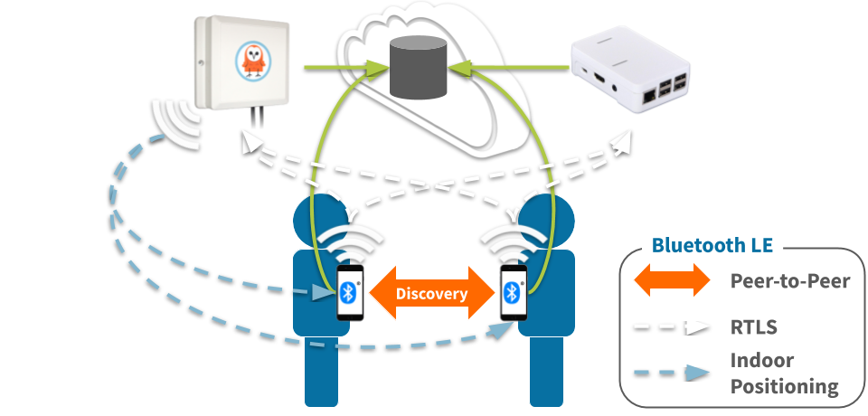
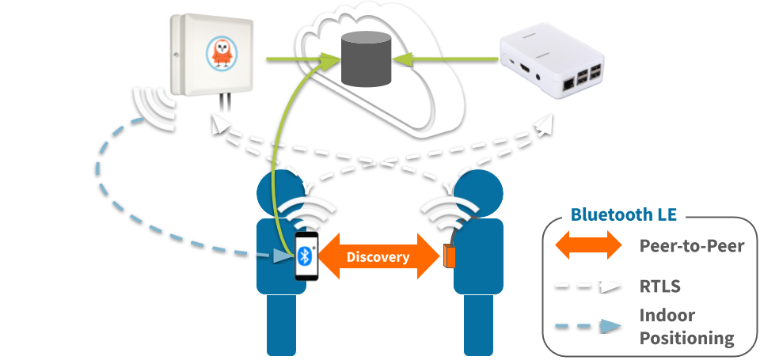

Contact Tracing Architectures
An overview of architectures combining mobile, beacons, infrastructure and—most importantly—human judgement.
The TL;DR (Too Long; Didn't Read)
Discover, evaluate and compare various contact tracing architectures.
- What's contact tracing?
- Contact tracing is an attempt to determine all persons who interacted with an individual who tests positive for a contagious disease.
- What's the technology?
- This overview focuses on Bluetooth as it is the primary technology used in contact tracing initiatives during the COVID-19 pandemic.
- Why different architectures?
- There is no one-size-fits-all architecture, each has advantages and disadvantages, and they are stronger when combined.
Index of architectures
This overview is organised from the obvious to the perhaps-less-obvious architectures in four parts as follows:
- Part 1 of 4
-
Mobile peer-to-peer
There's an app for that. Actually many apps... - Part 2 of 4
-
Beacon peer-to-peer
Minus the mobile OS constraints. Minus the connectivity benefits. - Part 3 of 4
-
Add infrastructure
Collect real-time traces from physical spaces. - Part 4 of 4
-
Human judgement
More than just a fallback plan!
Mobile peer-to-peer Part 1 of 4
There's an app for that. Oh wait, there are many apps for that...
- What's peer-to-peer?
- Each mobile device identifies and detects the proximity of its peers: other mobile devices.
- Any mobile device?
- Technically yes, any mobile device with Bluetooth 4 is capable. Practically no, as described below...
How it works
Mobile devices use Bluetooth LE for discovery, and their own Internet connectivity for traceability.
Peer-to-peer discovery
- mobile device periodically advertises (transmits) an identifier*
- mobile device periodically observes (receives) the identifiers of peers in range
- mobile device software estimates if an interaction occurred based on
- signal strength
- quantity and timing of decodings
* there is no single standard across implementations
Traceability
Mobile devices leverage their own Internet connectivity to periodically communicate with remote servers to exchange information about the devices they discovered to determine if there was contact with an infected individual.*
* again, there is no single standard across implementations
Beacon peer-to-peer Part 2 of 4
Freedom from the mobile OS constraints, but without the mobile connectivity benefits.
- What's peer-to-peer?
- Each beacon identifies and detects the proximity of its peers: other beacons.
- Any beacon?
- Any Bluetooth beacon that can be programmed with contact tracing software will be compatible with others programmed alike.
How it works
Beacons use Bluetooth LE for discovery. Connectivity for traceability varies.
Peer-to-peer discovery
- beacon periodically advertises (transmits) an identifier*
- beacon periodically observes (receives) the identifiers of peers in range
- beacon software estimates if an interaction occurred based on
- signal strength
- quantity and timing of decodings
* there is no single standard across implementations
Traceability
A typical beacon does not have its own means of Internet connectivity and must therefore rely on an intermediary such as:
- a paired mobile application
- an implementation-specific hub or gateway
Mobile-beacon hybrid architecture
Mobile devices and beacons can discover one another too
Add infrastructure Part 3 of 4
Enable physical spaces to collect real-time traces.
- What's infrastructure?
- Any Bluetooth receiver with network connectivity can act as gateway infrastructure.
- Any infrastructure?
- Yes, provided the Bluetooth gateway can run software to receive and forward contact tracing packets.
Beacons and infrastructure
Adds real-time connectivity for both interaction detection and location.
What the infrastucture adds for the physical space
Real-time location: traceability of where individuals are (and were) within the physical space.
- gateways observe (receive) the identifiers of beacons in range
- gateways forward the real-time data to the remote server
- software on the remote server estimates the real-time location of each beacon based on its relative signal strength on each gateway
What the infrastucture adds for the beacon
Real-time connectivity: each beacon can forward its real-time interactions via the infrastructure.
- beacon periodically observes (receives) the identifiers of peers in range
- beacon software estimates if an interaction occurred based on
- signal strength
- quantity and timing of decodings
- beacon advertises (transmits) its identifier and the identifiers of any peers in close proximity
Mobile and infrastructure
Adds real-time location and indoor positioning in the physical space itself.
What the infrastucture adds for the physical space
Infrastructure deployed throughout the space receives and relays the mobile transmissions to the remote server.
- gateways observe (receive) the identifiers of mobile devices in range
- gateways forward the real-time data to the remote server
- software on the remote server estimates the real-time location of each mobile based on its relative signal strength on each gateway
What the infrastucture adds for the mobile device
Mobile devices interpret the gateway transmissions in order to estimate their own position within the space.
- mobile device observes (receive) the identifiers of gateways in range
- mobile device uses an indoor positioning service (IPS) to estimate its own position based on the signal strength of each gateway
- mobile device relays its position to the remote server
Mobile, beacon and infrastructure
Robust interaction detection and location facilitated by the interoperability of Bluetooth LE.
Human judgement Part 4 of 4
More than just a fallback plan!
- Why a human element?
- Humans are already very good at contact tracing. Technology simply serves to augment their abilities.
- So the tech isn't perfect?
- Of course not! Even a well-executed solution will produce edge cases best resolved with human judgement.
Where to next?
Continue exploring our open architecture and all its applications.
-

Best practices for Bluetooth LE identifiers
Assignment of Bluetooth Low Energy (BLE) identifiers for interoperability and interpretability. -

DirAct
Proximity interaction detection software for Bluetooth beacons. -

diyActive Home
The home for reelyActive developers.